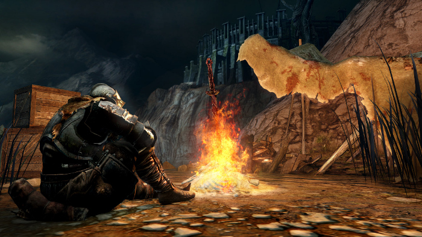
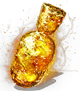
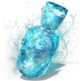

Bonfires and Estus
Bonfires
Along your journey through the land of Lothric, you'll come across bonfires. Bonfires are save points that also replenish all of your health and Estus Flasks. Whenever you die, you will always respawn back at the last bonfire you lit or rested at. However, any enemies you've killed (with the exception of bosses and a few special enemies) will also respawn when you rest at a bonfire. Always stop and light a bonfire if you come across a new one. Bosses will always spawn a bonfire after you've defeated them. Once you beat the first boss and make it to the bonfire in Firelink Shrine, you will be able to teleport from any bonfire to any other bonfire you have lit.
Estus Flasks
Estus flasks are your main source of health and focus point replenishment. If you need healing, take a swig from the Estus by pressing down on the D-Pad until you see the Estus flask icon. Then press the X button on your gamepad. Drinking from the Ashen Estus flask will refill your focus points so you can cast more spells or perform more Weapon Arts.
 